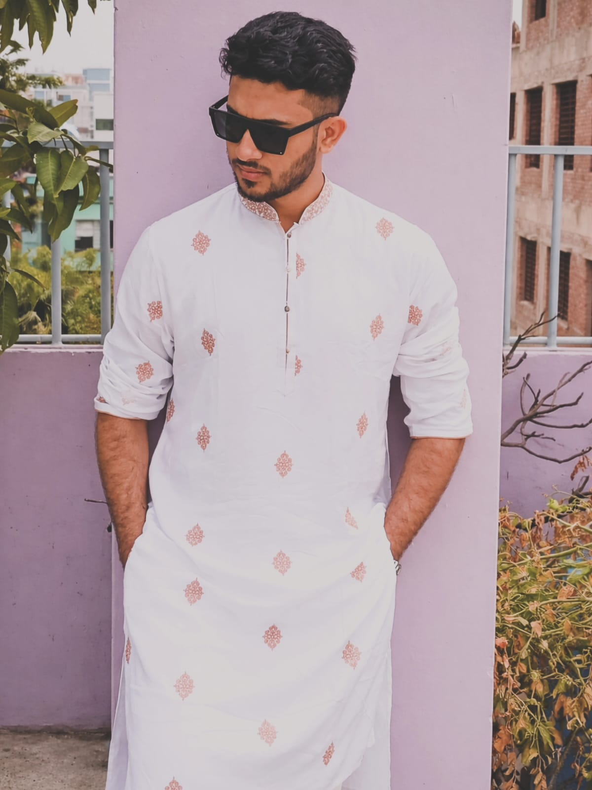
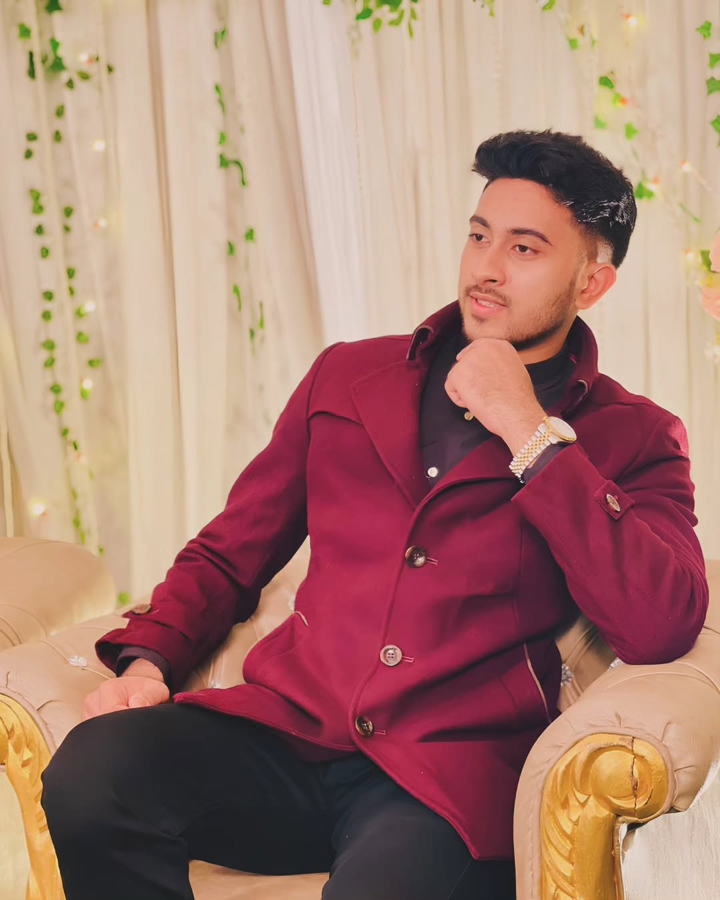
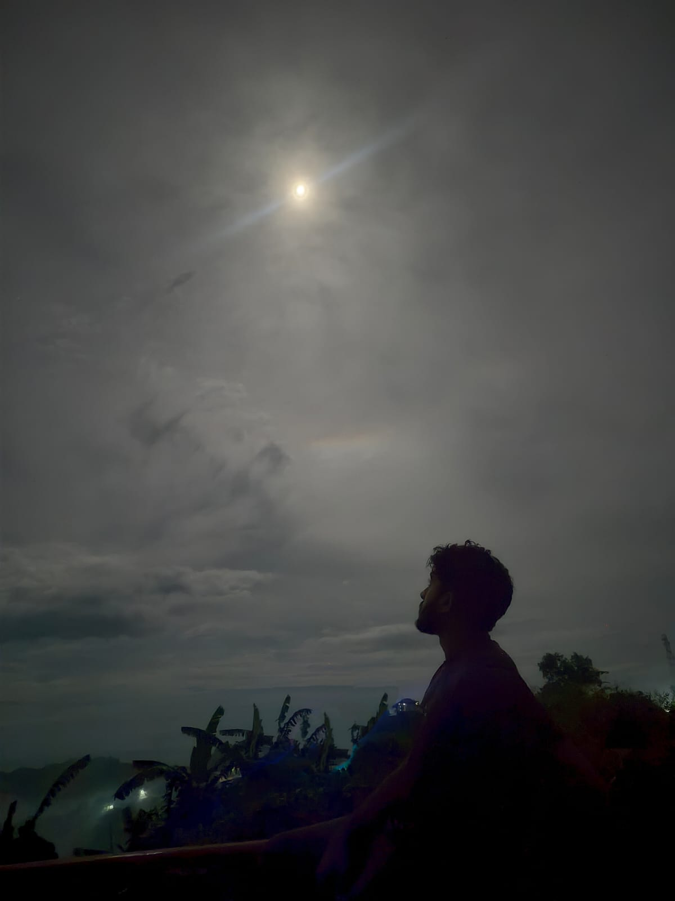
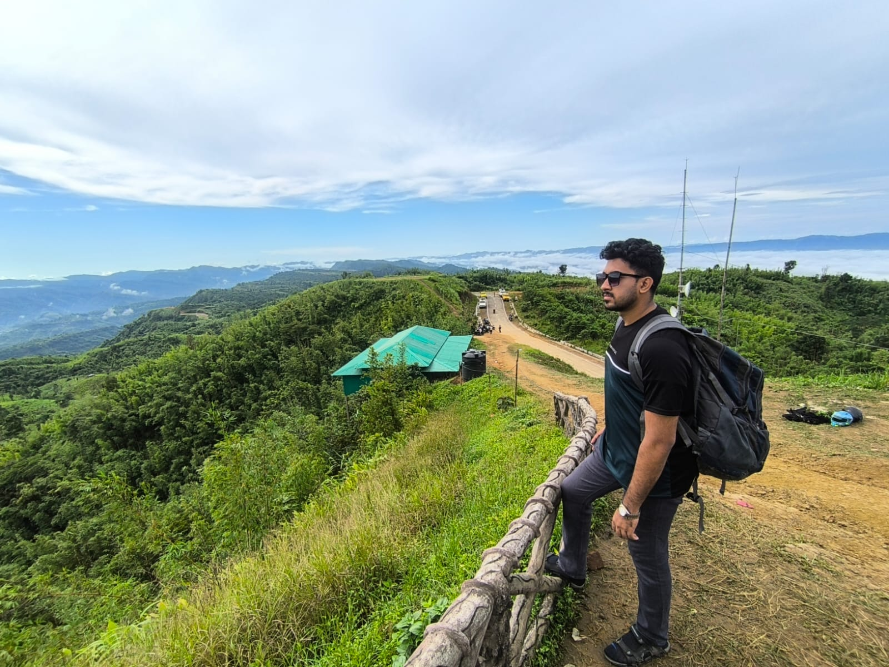
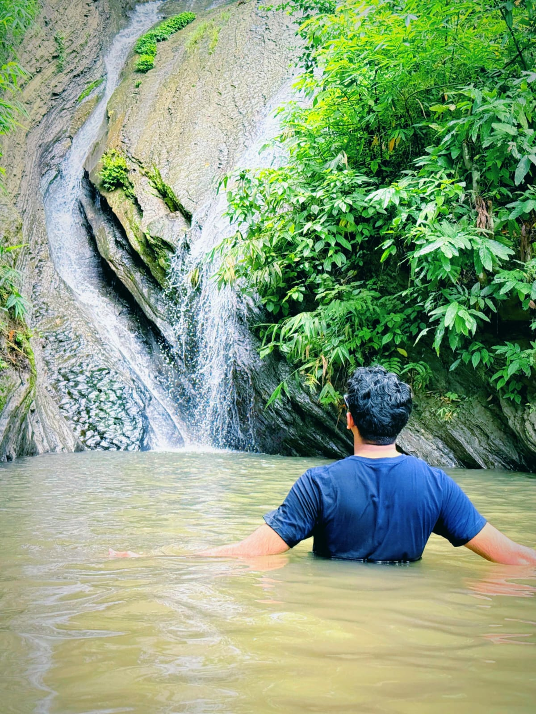
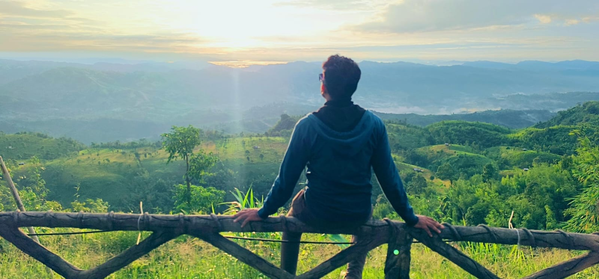
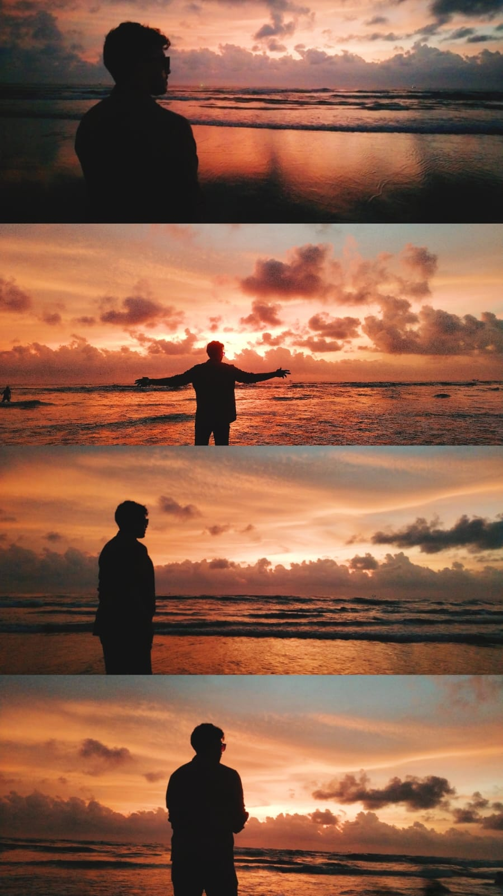

Scientific Institute · Jeddah
Science · Arabic curriculum
I am not a perfect person with a perfect life. I am simply someone trying to become better, build a good life, and someday share it with someone who understands what really matters.

A recent portraitMy name is Osama. I may appear quiet at first. I don't always know how to say everything I feel, and I usually need a little time before I become completely comfortable with someone.
But once I do, there is a much more talkative, playful and affectionate side of me. I enjoy laughing, sharing random thoughts, talking about things I love and making small moments memorable.
I am sensitive. Sometimes I feel things more deeply than I show. Small things can stay in my mind, and I can get hurt easily. But I don't like holding anger for long. I would rather understand, forgive and move forward.
Perhaps that is also why I notice when someone else is hurting. I don't believe every difficult moment needs a perfect solution. Sometimes a person simply needs someone who will stay.

A quieter side of meExact residential addresses and private contact information are intentionally not displayed publicly.
I was born and raised in Jeddah, Saudi Arabia. Growing up in the Middle East shaped parts of my personality, my outlook and the way I see people and life.
I completed my school education in Jeddah through the Arabic curriculum, then completed my undergraduate journey in 2026 with a Bachelor of Science in Business Administration from University of the People.
Education was more than a certificate for me. It taught me patience, independence and responsibility.
Science · Arabic curriculum
Arts / Humanities · Arabic curriculum
BSc Business Administration
I come from a middle-class Bangladeshi family. We don't live our lives trying to impress everyone, and I don't expect my future to be built around luxury or status.
My father works as a supervisor in Saudi Arabia. My mother is a homemaker. I have one elder sister and one younger brother.
Being part of my family has taught me that life is not always easy, but people can make difficult days lighter simply by standing beside each other.
I am the eldest son. That has naturally made me think about responsibility, family and the future. I don't always have every answer, but I try to be someone my family can depend on.
Works in Saudi Arabia.
Our home and family are central to her life.
Former assistant teacher; studied English Language and Literature at International Islamic University Chittagong.
Currently continuing his education.
I have intentionally not published my family's full names, exact school details, personal phone numbers or unnecessary identifying information. Fuller family information can be shared privately when there is genuine matrimonial interest.
I may not fill every silence. I like observing, understanding and slowly becoming comfortable.
When someone becomes important to me, their happiness and pain matter deeply.
I can get hurt, but I don't want resentment to become a permanent part of a relationship.
Anime, games, photography, travel, food and random fun are part of me too.
I take family and my future seriously while accepting that I still have much to learn.
Not a perfect home. A home where two people can be honest, tired, happy, emotional and still feel safe with each other.
I don't always know how to explain my feelings perfectly. Sometimes I keep things inside because I don't want to burden someone else.
But I believe a marriage should slowly become the one place where two people don't have to hide everything.
If I am having a difficult day, I don't necessarily need someone to solve my entire life. Sometimes I just need someone to sit beside me, listen without judging, and remind me that I am not facing everything alone.
And I want to give the same thing back.

Quiet momentsFaith. Islam and being religious-minded are important parts of who I am.
Kindness. I notice how someone treats people, especially when they have nothing to gain from being kind.
Honesty. I would rather hear an uncomfortable truth than live inside a comfortable lie.
Understanding. People are not always at their best. I want a relationship where both people can explain what they are feeling and be heard.
Peace. I don't want every disagreement to become a battle. I want two people who can calm each other down and find their way back to each other.
I love travelling, mountains, waterfalls, rivers, green landscapes and rainy weather. I enjoy photography, exploring new places, anime, games and trying different food.

Travel
Waterfalls
Mountains & open skies
I currently work in Student Affairs at Al-Hidaayah International School, Central Office, Chattogram.
That is part of my life, but it is not everything I am. My work is simply one of the ways I am trying to build a stable future.
And I don't want to pretend that I do.
I am still building my career and financial stability. One of my goals is to pursue a master's degree overseas if the right opportunity becomes possible.
I want to keep learning, work hard, travel, experience different cultures and eventually build a peaceful home.
I don't know exactly what every year will look like. But I know I want to keep moving forward.
I don't have a long list of demands. Age and height are not things I want to make the centre of a marriage. What matters much more is whether two people can understand each other.
I hope to meet someone simple — someone who doesn't need an extravagant lifestyle to be happy, and who believes a peaceful life can be beautiful.
I would like her to be caring, kind, well-mannered, family-oriented and religious-minded. I value emotional maturity and a calm personality.
If she wants to study further, work, build a career or follow a dream, I would support that. I don't want her world to become smaller because she got married.
If she dreams of studying or living abroad someday, I would be happy to understand that dream and work toward it together.
Someone kind when nobody is watching.
Someone who can listen and understand feelings.
Someone who doesn't measure happiness by status or luxury.
Someone who values Islam and wants to grow together.
Someone whose education and ambitions I can support.
Someone who doesn't disappear when life becomes hard.
I have had painful experiences in life, and they taught me not to take trust lightly. Because of that, I don't enter a relationship just to pass time or to have someone around temporarily.
I am looking for something genuine. I need a person who understands that trust is built slowly, through honesty, consistency and respect.
My boundaries are not about controlling another person. They are about protecting something I take seriously. I don't want to be used, played with, or treated as a temporary chapter in someone's life — and I would never want to treat someone that way either.
If we choose each other, I want both of us to feel safe enough to be honest, patient enough to understand each other, and serious enough to build something real.
I want a best friend, a companion and a person with whom I can slowly build a home.
I want the kind of marriage where we can laugh about something stupid one evening, worry about money together another day, celebrate a small achievement, argue sometimes, say sorry, forgive, and still choose each other the next morning.
I don't expect either of us to be strong every day.
There will be days when she needs me more. There will be days when I need her more.
And I hope we can understand that this is not weakness. This is what being partners means to me.
Not only when everything is beautiful, but when one of us is tired, worried or struggling.
Support education, work, dreams and personal growth.
Travel, eat new food, explore places and enjoy ordinary days.
We don't need to start with everything. We can build slowly and responsibly.
If life allows, I would even love to build a small business or project together someday — something that grows because both of us cared about it.
I come from a middle-class family. I am still building my career, my financial stability and my future.
I don't have everything someone else may already have. I don't want to hide that behind impressive words.
What I do have is the willingness to work, learn, grow, take responsibility and keep moving forward.
I don't want a wife who comes with a long list of expectations. I want a woman with a good heart and a simple way of looking at life — someone who can see the person I am today and still believe in the person I am trying to become.
Maybe we won't have everything at the beginning.
Maybe we can build it together.
Further family information and direct contact can be shared privately between families.